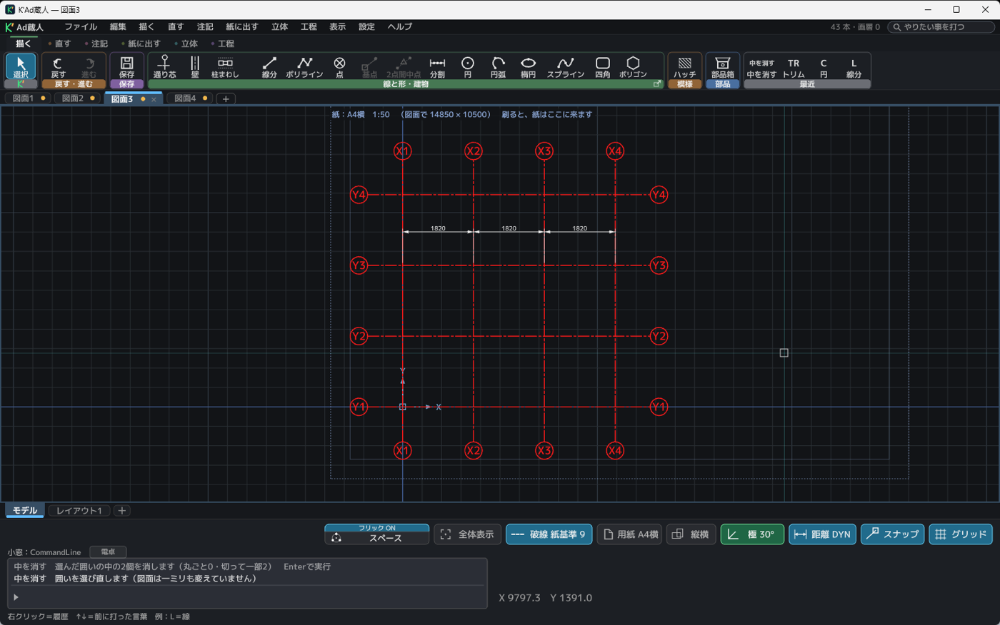
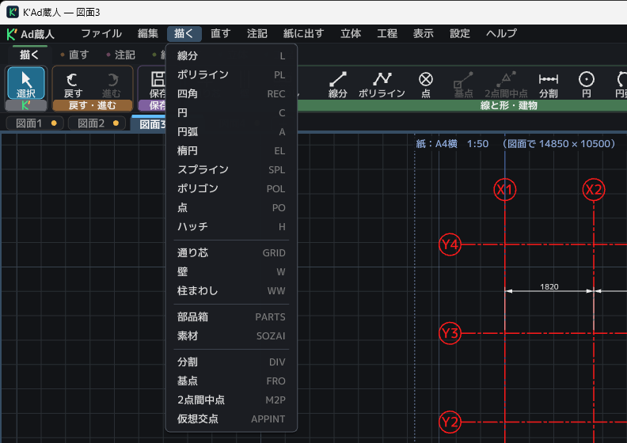
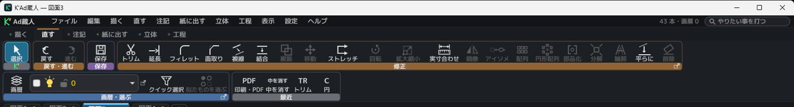

1. Getting Started (the layout of the screen)
About this manual

The Command List (?) is a roster; this manual is something to read.
It explains in words how to move the cursor, which keys to press, and the steps of each command.
There are three ways to open it.
- The [Manual] item in the Help menu on the menu bar
- Type 教本 in the Command Line (the input box at the bottom of the screen) and press Enter
- From the note at the foot of the Command List (?).
Add a chapter number in the Command Line — 教本 9 — and it opens at that chapter.
The same text with pictures — the "Handbook" — is also on the Engawaya site: open it with [Handbook (open in browser)] in the Help menu on the menu bar
(engawaya.com/kad/tebiki/ — open it in a separate window and keep it beside you as you work).
The layout of the screen

- Top row = the menu bar (File, Edit, Draw, Modify, Annotate, Paper, 3D, Process, View, Settings, Help). Every tool lives here. To the right of each name is the word you type in the command box (L, TR…). Clicking "Type what you want to do" at the right end puts "? " in the command box. Type a word and press Enter to search the tools with that word (for example: ? wall).
- Below it = the tabs, in working order (Draw / Modify / Annotate / Paper / 3D / Process), and the ribbon. Only the tools of the chosen tab line up, in a single row. Select, Undo, Redo and Save at the left end, and "Recent" at the right end (up to the four tools you used last), stay in the same place on every tab. Each button carries its command-box word (L, TR…) — the buttons teach you the words. To show every shelf at once, turn off "Arrange the ribbon in tabs" on the Settings board (in that layout you can reorder the shelves with "Ribbon order"). Press the small handle at the right end of a shelf's band to float just that shelf near your hand. A floating panel can be dragged, and × sends it back to the ribbon. The grid button on a floating panel shrinks it to "icons only" (hover over a button to see its name). Drag it to the edge of the screen and let go to dock it there (left/right = a vertical strip, top/bottom = a horizontal row; drag the ⋮⋮ grip out to float it again). The handle to the right of the layer control floats just the layer bar.
- Right side of the Annotate tab = the "Linetype, Dimension, Text" fields. Dash scale, dimension style (▼ and text height), the height of the text you are about to type (paper mm / drawing units) and the typeface can be seen and changed on the spot. It can be dragged out to float, and × sends it back to the ribbon shelf.
- Below the ribbon = the drawing tabs. One per drawing. + opens a new drawing.
- The middle = the drawing area. Your drawing sits here at full size.
- Just below the drawing area = the space tabs (Model | Layout1). The tabs above say which drawing; the tabs below say which sheet of that drawing. Model = where you draw at full size. Layout = paper. Chapter 14, “Layout (paper space)”, has the details.
- Beside the cursor = the prompt. It tells you what to do next, in the future tense.
- The bottom bar = the Command Line, and the toggles for constraints (規律), dynamic distance input (距離DYN), object snap (スナップ) and grid (グリッド). The Command Line has its name plate above it — 小窓：CommandLine — and a note on how to type just below: this is where words and numbers are received. It is three lines high: the top two are the history (what you just did, in the past tense) and the bottom one is where you type. Roll the wheel over it to scroll back through the history. To see more, right-click over it and the full history window opens.
- The right side = the Layer, Blocks (部品箱) and Properties panels. Drag them by their title bars, close them with ×. They remember where you left them.



Our measure: 1 is 1 drawing unit
You draw in drawing units. 1 is 1 drawing unit.
Whether you read that 1 as a millimetre, a metre or an inch is up to you. CAD itself carries no units — nowhere in a DXF file does it say “these are millimetres”.
So K'Ad does not claim a unit either.
A line you drew as 1000 is a line of 1000 drawing units. If you meant millimetres, that is one metre; if you meant metres, one kilometre. You decide.
Dimensions and coordinates are counted in the same drawing units. Draw things at full size.
The scale (1:50 and so on) belongs to the drawing — one per drawing. A new drawing starts at 1:50.
The scale does not decide the size of things; it decides the paper side.
- Size of text and dimensions = decided in millimetres on paper (3.5 mm on paper is 175 in a 1:50 drawing).
- The dotted rectangle on the drawing board = the "paper" at the current sheet size and scale.
Change it with "縮尺 5" in the command box (= 1:5), or on the Page Setup / Print boards.
They all change the same single value. It never moves until you change it.
= Draw things at full size; the scale is a promise about the paper. This is the backbone of this house.
※ The paper side of things — sheet size A4, line weights, dash spacing — is in true millimetres, because that is the length you would measure with a ruler on the sheet that comes out of the printer.
If you get stuck
- The prompt beside the cursor always tells you what comes next.
- Esc means “one step back”. It lets go of whatever you were holding and closes whatever was open. When in doubt, press Esc.
- If you make a mistake, press U (undo). You can go back as many times as you like. If you go back too far, ⌘Y (redo) brings one step back.
Correct the manual there and this one is corrected the same day.
The pictures show the Windows version (retaken in November 2026). On the Mac version, Ctrl is ⌘ and Alt is ⌥.